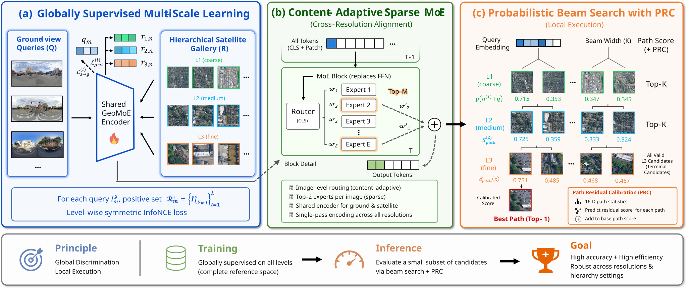
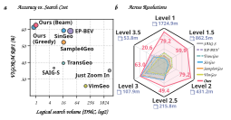

Align scales globally
Level-wise InfoNCE trains one dual encoder while keeping negatives within the same physical scale.
arXiv 2026 Cross-view geo-localization
One Query, Many Scales: Sparse Mixture-of-Experts for Efficient Hierarchical Cross-View Geo-Localization

R@1 on VIGOR-M
R@40m on JustZoomIn
of exhaustive L3 matching cost
01 / Overview
GeoMoE decouples multi-scale representation learning from hierarchical retrieval, so one query descriptor can travel from a city-scale gallery to the finest satellite tiles.
Cross-view geo-localization matches a ground query to geo-tagged satellite imagery. GeoMoE replaces fixed-resolution exhaustive search with a shared DINOv2 dual encoder trained across scales and a sparse Top-2 mixture of experts. At inference, every image is encoded once; a probabilistic K=4 beam follows parent-child links and scores only a compact candidate set. A calibrator trained on the official training split reranks final paths without test-time label adaptation.
Learn descriptors that remain comparable everywhere, then use hierarchy only to decide where to spend the search budget.
02 / Geographic hierarchy
VIGOR-M preserves each city as a continuous surface served by an aligned map-tile pyramid. GeoMoE follows this hierarchy while keeping one globally comparable descriptor at every scale.
03 / Method
A shared backbone learns a globally comparable space; sparse routing and coarse-to-fine search allocate capacity only where it matters.

Level-wise InfoNCE trains one dual encoder while keeping negatives within the same physical scale.
The final Transformer FFN routes each token through the best two of five learned experts.
A K=4 probabilistic beam expands parent-child paths before a train-only residual calibrator reranks the finalists.
04 / Results
Released B11/E5 Top-2 checkpoint, fixed K=4 beam, and PRC fitted only on the official training split.
New benchmark
| R@1 | R@100m | R@200m | R@300m | Median |
|---|---|---|---|---|
| 62.39% | 77.82% | 84.30% | 86.86% | 52.33 m |
Large-area benchmark
| R@1 | R@40m | R@50m | R@100m | Median |
|---|---|---|---|---|
| 81.71% | 95.78% | 96.32% | 97.68% | 16.43 m |

05 / Dataset
A four-city benchmark built for single-resolution, cross-resolution, and hierarchical geo-localization.
VIGOR-M adds an explicit parent-child satellite hierarchy and held-out half-step galleries, making resolution transfer a measurable capability rather than an incidental side effect.
Explore the dataset
06 / Citation
Code is released under Apache-2.0. Dataset licenses and third-party notices remain separate.
@misc{fan2026queryscalessparsemixtureofexperts,
title = {One Query, Many Scales: Sparse Mixture-of-Experts for Efficient Hierarchical Cross-View Geo-Localization},
author = {Ruijie Fan and Junyan Ye and Qi Zhu and Weijia Li},
year = {2026},
eprint = {2608.01060},
archivePrefix = {arXiv},
primaryClass = {cs.CV},
url = {https://arxiv.org/abs/2608.01060},
}